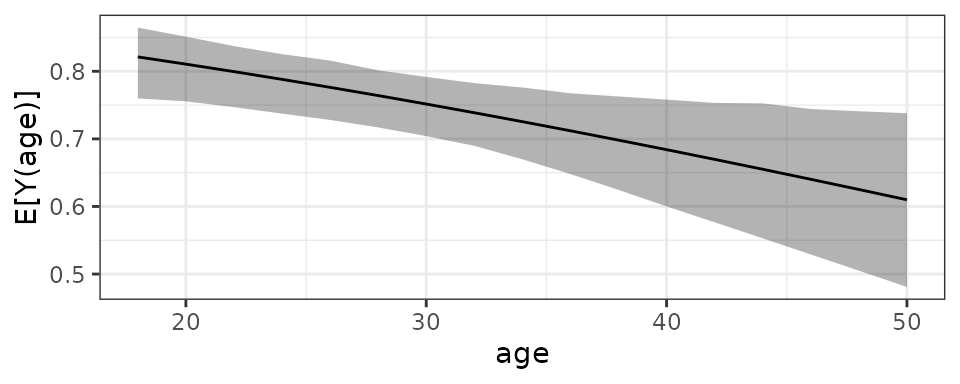
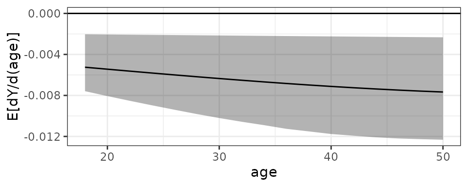

`clarify`: Simulation-Based Inference for Regression Models
2025-09-19
Source:vignettes/clarify.Rmd
clarify.RmdNote: This is an updated version of the R Journal article
about clarify. Please cite that article when citing
the package. Use citation("clarify") to generate a
citation.
Introduction
Although regression models are frequently used in empirical research to study relationships among variables, often the quantity of substantive interest is not one of the coefficients of the model, but rather a quantity derived from the coefficients, such as predicted values or average marginal effects. Quantifying the uncertainty of these derived quantities (i.e., computing standard errors, confidence intervals, and p-values) requires additional processing. Several methods of doing so exist, including the delta method, the bootstrap, and simulation-based inference. clarify implements simulation-based inference, which we describe below along with these other methods.
The delta method involves computing a first-order Taylor series approximation to the variance of the derived quantity, and standard Wald-based inference relies on computing quantiles based on the Normal distribution and using them to compute p-values and confidence intervals. clarify implements an alternative to the delta method—simulation-based inference—which involves simulating a “posterior” distribution of the derived quantities. Simulation-based inference does not require understanding Taylor series or the calculus that underlies it, which can make it more palatable to nontechnical audiences and easier to learn for students without necessarily sacrificing statistical performance (King, Tomz, and Wittenberg 2000; Zelner 2009). Some studies have found that simulation-based inference performs as well or better than the delta method for computing derived quantities (i.e., with respect to achieving close to nominal coverage for confidence intervals), especially for complicated derived quantities and in smaller samples (MacKinnon, Lockwood, and Williams 2004; Hole 2007; Herron 1999). Its empirical performance has been particularly well studied in the context of mediation analysis, in which the quantities of interest are products and ratios of regression coefficients, where it has been shown to perform well relative to the delta method due to the non-Normality of these quantities (Tofighi and MacKinnon 2016; Preacher and Selig 2012).
The methodology clarify relies on was developed by Krinsky and Robb (1986) and is described in King, Tomz, and Wittenberg (2000) and Herron (1999). Simulation-based inference involves taking draws from a specified joint distribution of model parameters, computing derived quantities from these draws, and collecting the derived quantities in a “posterior” distribution, from which uncertainty measures (standard errors and confidence intervals) can be computed. This method assumes the model parameters are drawn from a multivariate Normal (or T) distribution with means at the estimated values and covariance equal to the asymptotic covariance matrix of the estimated values, a standard assumption motivated by the central limit theorem that underlies usual inference on the original model parameters. Arriving at the posterior distribution does not require taking any derivatives or making any approximations beyond those usually used for inference on model parameter estimates, except for the approximation due to Monte Carlo error induced by sampling from a finite number of simulations (which can always be reduced by increasing the number of draws at the cost of increased computing time).
The nonparametric bootstrap is another alternative to the delta method for inference that does not require its analytic approximations (Efron and Tibshirani 1986); bootstrapping typically involves re-sampling individuals from the sample, fitting the model in each bootstrap sample, and computing the quantity of interest from each model. Although bootstrapping tends to work well in practice, especially for complex and non-Normal estimators, refitting the model repeatedly can be prohibitively time-consuming and computationally expensive, especially for complicated models or large datasets. Simulation-based inference only requires the model to be fit once, and the simulations involve taking draws from a distribution produced from the single set of estimated parameters, making it much quicker in practice and allowing the user to capitalize on the already valid estimation of the model parameters. Methods for computing valid confidence intervals in cases when the quantity of interest has a complicated distribution are better developed when bootstrapping, however (Efron and Tibshirani 1986).
More formally, we fit a regression model \(y_i = f(x_i; \beta)\), such as a linear or other generalized linear model with model coefficients \(\beta\). We assume \(\hat{\beta} \sim \text{MVN}(\beta, \Sigma_{\hat{\beta}})\) where \(\hat{\beta}\) is the vector of estimates of \(\beta\) and \(\Sigma_{\hat{\beta}}\) is their asymptotic covariance matrix. We define a function \(\tau(\beta)\) that represents a quantity of interest derived from the model parameters, and compute its estimate \(\widehat{\tau(\beta)}\) as \(\tau(\hat{\beta})\).
To perform simulation-based inference, we take \(M\) draws \(\tilde{\beta}^{(j)}\) for \(j\in(1, \dots, M)\) from a multivariate Normal distribution with mean vector \(\mu = \hat{\beta}\) and covariance \(\Sigma = \hat{\Sigma}_{\hat{\beta}}\), where \(\hat{\Sigma}_{\hat{\beta}}\) is an estimate of the asymptotic covariance matrix of the parameter estimates. We use the distribution of \(\tilde{\tau}=\tau(\tilde{\beta})\) as the “posterior” distribution of \(\widehat{\tau(\beta)}\), and compute its variance as \[\begin{equation} \hat\sigma^2_{\widehat{\tau(\beta)}} = \frac{1}{M-1}\sum^M_{j=1}{(\tilde{\tau}^{(j)} - \bar{\tilde{\tau}})^2} \end{equation}\] and quantile \(100(1-\alpha)\%\) confidence interval limits as \(\left[\tilde{\tau}_{(\frac{\alpha}{2})}, \tilde{\tau}_{(1-\frac{\alpha}{2})}\right]\) where \(\tilde{\tau}_{(q)}\) is the \(q\)th value of \(\tilde{\tau}\) when arranged in ascending order (i.e., the \(q\)th quantile of the empirical cumulative distribution function of \(\tilde{\tau}\)). Simulation-based Wald-type confidence intervals can be computed as \[\begin{equation} \left[\tau(\hat{\beta}) + \hat\sigma_{\widehat{\tau(\beta)}} Z_{\frac{\alpha}{2}}, \tau(\hat{\beta}) + \hat\sigma_{\widehat{\tau(\beta)}} Z_{1-\frac{\alpha}{2}} \right] \end{equation}\] where \(Z_q\) is the \(q\)th quantile of a standard Normal distribution. The delta method-based Wald-type confidence intervals use this formula but with the first-order Taylor approximation to the asymptotic variance: \[\begin{equation} \hat\sigma^2_{\widehat{\tau(\beta)}}=\nabla\tau(\hat{\beta}) \Sigma_{\hat{\beta}} \nabla\tau'(\hat{\beta}) \end{equation}\] where \(\nabla\tau(\hat{\beta})\) is the gradient of \(\tau(\beta)\) with respect to \(\beta\) evaluated at \(\hat{\beta}\).
To compute a p-value for a hypothesis test involving the quantity of interest, i.e., \(\text{H}_0: \tau (\beta) = \tau_0\) with a given null value \(\tau_0\), we can invert the confidence interval (Thulin 2024); that is, we find the largest value of \(\alpha\) such that \(\tau_0\) is within the confidence interval and use that \(\alpha\) as the p-value for the test. For Wald-based inference (either using the simulation-based variance or delta method-based variance), this is equivalent to performing a standard two-sided Z-test using the test statistic \[\begin{equation} Z=\frac{\tau(\hat\beta)-\tau_0}{\hat\sigma_{\widehat{\tau(\beta)}}} \end{equation}\] One benefit of using the quantile p-values for inference is that equivalent tests of the same hypothesis will always yield identical p-values; for example, testing the equality of two derived quantities will yield the same p-value when comparing the difference between the quantities against a null hypothesis of 0 and the ratio of the quantities against a null hypothesis of 1, as each of these hypothesis is true if and only if the other is true.
One would expect simulation-based quantile inference, simulation-based Wald inference, and delta method-based Wald inference to align when the posterior is Normally distributed around the estimate, in which case any discrepancies would be due to Monte Carlo error in the simulated values (and therefore would shrink with increasing draws). However, for low values of \(\alpha\), it may require many draws for the simulation-based intervals to stabilize; delta method-based intervals are not subject to this error. There are a few cases in which the results might diverge: in some cases, the first-order Taylor series approximation to the variance may be poor, though in practice the approximation error is small and shrinks quickly with increasing sample size. When the posterior distribution is non-Normal but symmetric around the estimate, the quantile intervals may be more accurate (i.e., in the sense of achieving closer to nominal coverage) because they do not rely on quantiles from the Normal distribution (Tofighi and MacKinnon 2016).
Another potential advantage quantile intervals can have over Wald-intervals is that when some monotonic transformation of the estimate has a symmetric distribution centered around the transformed estimate, the quantile intervals can achieve correct coverage without requiring knowledge of which transformation is required (Efron and Tibshirani 1986); this is true of the quantile-based p-values as well. When the distribution is not centered around the estimate and no monotonic transformation will make it so, though, neither quantile-based nor Wald-based intervals would be expected to perform well, and quantile intervals could yield even worse coverage than Wald-based intervals, a phenomenon that occurs in the context of bootstrapping (Efron and Tibshirani 1986)1. An informal falsification test for whether such a monotonic transformation exists is whether the median of the simulated estimates is aligned with the point estimate; if it is not, there is no monotonic transformation that will yield a symmetric quantile interval with the desired coverage.
Related software
Similar functionality exists in the CLARIFY package in Stata2 (Tomz, Wittenberg, and King 2003) and used to be available in the Zelig R package (Imai, King, and Lau 2008), though there are differences in these implementations. clarify provides additional flexibility by allowing the user to request any derived quantity, in addition to providing shortcuts for common quantities, including predictions at representative values, average marginal effects, and average dose-response functions (described below). clarify relies on and can be seen as a companion to the marginaleffects package (Arel-Bundock, Greifer, and Heiss 2024), which offers similar functionality but primarily uses the delta method for calculating uncertainty (though simulation-based inference is supported in a more limited capacity as well).
Using clarify
There are four steps to using clarify:
Fit the model to the data using modeling functions in supported packages.
Use
sim()to take draws from the multivariate distribution of the estimated model coefficients.Use
sim_apply()or its wrapperssim_setx(),sim_ame(), andsim_adrf()to compute derived quantities using each simulated set of coefficients.Use
summary()andplot()to summarize and visualize the distribution of the derived quantities and perform inference on them.
In the sections below, we will describe how to implement these steps
in detail. First, we will load clarify using
library().
For a running example, we will use the lalonde dataset
in the MatchIt package (Ho et al. 2011), which contains data
on 614 participants enrolled in a job training program or sampled from a
survey (Dehejia and Wahba
1999). The treatment variable is treat and the
outcome is re78, and all other variables are confounders.
Although the original use of this dataset was to estimate the effect of
treat on re78, we will use it more generally
to demonstrate all of clarify’s capabilities. In
addition, we will use a transformation of the outcome variable to
demonstrate applications to nonlinear models, for which the benefits of
simulation-based inference are more apparent.
data("lalonde", package = "MatchIt")
# Create a binary outcome variable
lalonde$re78_0 <- ifelse(lalonde$re78 > 0, 1, 0)
head(lalonde)
#> treat age educ race married nodegree re74 re75 re78 re78_0
#> NSW1 1 37 11 black 1 1 0 0 9930.0460 1
#> NSW2 1 22 9 hispan 0 1 0 0 3595.8940 1
#> NSW3 1 30 12 black 0 0 0 0 24909.4500 1
#> NSW4 1 27 11 black 0 1 0 0 7506.1460 1
#> NSW5 1 33 8 black 0 1 0 0 289.7899 1
#> NSW6 1 22 9 black 0 1 0 0 4056.4940 11. Fitting the model
The first step is to fit the model. clarify can operate on a large set of models (those supported by marginaleffects), including generalized linear models, multinomial models, multivariate models, and instrumental variable models, many of which are available in other R packages. Even if clarify does not offer direct support for a given model, there are ways to use its functionality regardless (explained in more detail below).
Because we are computing derived quantities, it is not critical to parameterize the model in such a way that the coefficients are interpretable, e.g., by using a model with interpretable coefficients or centering predictors. Below, we will fit a probit regression model for the outcome given the treatment and confounders. Coefficients in probit regression do not have a straightforward interpretation, but that does not matter; our quantities of interest can be expressed as derived quantities—functions of the model parameters, such as predictions, counterfactual predictions, and averages and contrasts of them.
2. Drawing from the coefficient distribution
After fitting the model, we will use sim() to draw
coefficients from their sampling distribution. The sampling distribution
is assumed to be multivariate Normal or multivariate T with appropriate
degrees of freedom, with a mean vector equal to the estimated
coefficients and a covariance matrix equal to the asymptotic covariance
matrix extracted from the model. The arguments to sim() are
listed below:
sim(fit = , n = , vcov = , coefs = , dist = )fit– the fitted model object, the output of the call to the fitting function (e.g.,glm())n– the number of simulated values to draw; by default, 1000. More values will yield more replicable and precise results at the cost of speed.vcov– either the covariance matrix of the estimated coefficients, a function used to extract it from the model (e.g.,sandwich::vcovHC()for the robust covariance matrix), or a string or formula giving a code for extracting the covariance matrix, which is passed tomarginaleffects::get_vcov(). If left unspecified, the default covariance matrix will be extracted from the model.coefs– either a vector of coefficients to be sampled or a function to extract them from the fitted model. If left unspecified, the default coefficients will be extracted from the model. Typically this does not need to be specified.dist– the name of the distribution from which to draw the sampled coefficients. Can be"normal"for a Normal distribution ort(#)for a T-distribution, where#represents the degrees of freedom. If left unspecified,sim()will decide on which distribution makes sense given the characteristics of the model (the decision is made byinsight::get_df()withtype = "wald"). Typically this does not need to be specified.
If one’s model is not supported by clarify, one can
omit the fit argument and just specify the
vcov and coefs argument, which will draw the
coefficients from the distribution named in dist
("normal" by default).
sim() uses a random number generator to draw the sampled
coefficients from the sampling distribution, so a seed should be set
using set.seed() to ensure results are replicable across
sessions. Using more iterations (i.e., increasing n) yields
results that will be more stable across runs even when a seed is not
set.
The output of the call to sim() is a
clarify_sim object, which contains the sampled
coefficients, the original model fit object if supplied, and the
coefficients and covariance matrix used to sample.
set.seed(1234)
# Drawing 1000 simulated coefficients using an HC2 robust
# covariance matrix
s <- sim(fit, n = 1000,
vcov = "HC2")
s
#> A `clarify_sim` object
#> - 11 coefficients, 1000 simulated values
#> - sampled distribution: multivariate normal
#> - original fitting function call:
#>
#> glm(formula = re78_0 ~ treat * married + age + educ + race +
#> nodegree + re74 + re75, family = binomial("probit"), data = lalonde)3. Computing derived quantities
After sampling the coefficients, one can compute derived quantities
on each set of sampled coefficients and store the result, which
represents the “posterior” distribution of the derived quantity, as well
as on the original coefficients, which are used as the final estimates.
The core functionality is provided by sim_apply(), which
accepts a clarify_sim object from sim() and a
function to compute and return one or more derived quantities, then
applies that function to each set of simulated coefficients. The
arguments to sim_apply() are below:
sim_apply(sim = , FUN = , verbose = , cl = , ...)sim– aclarify_simobject; the output of a call tosim().FUN– a function that takes in either a model fit object or a vector of coefficients and returns one or more derived quantities. The first argument should be namedfitto take in a model fit object orcoefsto take in coefficients.verbose– whether to display a progress bar.cl– an argument that controls parallel processing, which can be the number of cores to use or a cluster object resulting fromparallel::makeCluster()....– further arguments toFUN.
The FUN argument can be specified in one of two ways:
either as a function that takes in a model fit object (e.g., a
glm or lm object, the output of a call to
glm() or lm()) or a function that takes in a
vector of coefficients. The latter will always work but the former only
works for supported models. When the function takes in a model fit
object, sim_apply() will first insert each set of sampled
coefficients into the model fit object and then supply the modified
model to FUN.
For example, we will let our derived quantity of interest be the
predicted probability of the outcome for participant PSID1. We specify
our FUN function as follows:
sim_fun1 <- function(fit) {
predict(fit, newdata = lalonde["PSID1",], type = "response")
}The fit object supplied to this function will be one in
which the coefficients have been set to their values in a draw from
their sampling distribution as generated by sim(). We then
supply the function to sim_apply() to simulate the sampling
distribution of the predicted value of interest:
est1 <- sim_apply(s, FUN = sim_fun1, verbose = FALSE)
est1
#> A `clarify_est` object (from `sim_apply()`)
#> - 1000 simulated values
#> - 1 quantity estimated:
#> PSID1 0.9757The resulting clarify_est object contains the simulated
estimates in matrix form as well as the estimate computed on the
original coefficients. We will examine the posterior distribution
shortly, but first we will demonstrate computing a derived quantity from
the coefficients directly.
The race variable is a factor, and the
black category is used as the reference level, so it is not
immediately clear whether there is a difference between the coefficients
racehispan and racewhite, which represent the
non-reference categories hispan and white. To
compare these two directly, we can use sim_apply() to
compute a derived quantity that corresponds to the difference between
them.
sim_fun2 <- function(coefs) {
hispan <- unname(coefs["racehispan"])
white <- unname(coefs["racewhite"])
c("w - h" = white - hispan)
}
est2 <- sim_apply(s, FUN = sim_fun2, verbose = FALSE)
est2
#> A `clarify_est` object (from `sim_apply()`)
#> - 1000 simulated values
#> - 1 quantity estimated:
#> w - h -0.09956The function supplied to FUN can be arbitrarily
complicated and return as many derived quantities as one wants, though
the slower each run of FUN is, the longer it will take to
simulate the derived quantities. Using parallel processing by supplying
an argument to cl can sometimes dramatically speed up
evaluation.
There are several functions in clarify that serve as
convenience wrappers for sim_apply() to automate some
common derived quantities of interest. These include
sim_setx()– computing predicted values and first differences at representative or user-specified values of the predictorssim_ame()– computing average adjusted predictions, contrasts of average adjusted predictions, and average marginal effectssim_adrf()– computing average dose-response functions and average marginal effects functions
These are described in their own sections below. In addition, there
are functions that have methods for clarify_est objects,
including cbind() for combining two
clarify_est objects together and transform()
for computing quantities that are derived from the already-computed
derived quantities. These are also described in their own sections
below.
4. Summarize and visualize the simulated distribution
To examine the uncertainty around and perform inference on our
estimated quantities, we can use plot() and
summary() on the clarify_est object.
plot() displays a density plot of the resulting
estimates across the simulations, with markers identifying the point
estimate (computed using the original model coefficients as recommended
by Rainey (2023)) and,
optionally, uncertainty bounds (which function like confidence or
credible interval bounds). The arguments to plot() are
below:
plot(x = , parm = , ci = , level = , method = , reference =)x– theclarify_estobject (the output of a call tosim_apply()).parm– the names or indices of the quantities to be plotted if more than one was estimated insim_apply(); if unspecified, all will be plotted.ci– whether to display lines at the uncertainty bounds. The default isTRUEto display them.level– ifciisTRUE, the desired two-sided confidence level. The default is .95 so that that the bounds are at the .025 and .975 quantiles whenmethod(see below) is"quantile".method– ifciisTRUE, the method used to compute the bounds. Allowable methods include the Normal approximation ("wald") or using the quantiles of the resulting distribution ("quantile"). The Normal approximation involves multiplying the standard deviation of the estimates (i.e., which functions like the standard error of the sampling distribution) by the critical Z-statistic computed using(1-level)/2to create a symmetric margin of error around the point estimate. The default is"quantile"to instead use quantile-based bounds.reference– whether to display a normal density over the plot for each estimate and an indicator line for the median of the estimate. The default isFALSEto omit them.
Below, we plot the first estimate we computed above, the predicted probability for participant PSID1:
plot(est1, reference = TRUE, ci = FALSE)Overlaid on the plot in red is a Normal distribution with the same
mean and standard deviation as the simulated values; this is requested
by setting reference = TRUE. From the plot, one can see
that the distribution of simulated values is non-Normal, asymmetrical,
and not centered around the estimate, with no values falling above 1
because the outcome is a predicted probability. Given its non-Normality,
the quantile-based bounds may be more appropriate than those resulting
from the Normal approximation, as the bounds computed from the Normal
approximation would be outside the bounds of the estimate. The blue
reference line for the median of the estimates is close to the point
estimate, suggesting it is possible for a monotonic transformation to
have a symmetric distribution around the estimate3. The plot itself is a
ggplot object that can be modified using
ggplot2 syntax.
We can use summary() to display the value of the point
estimate, the uncertainty bounds, and other statistics that describe the
distribution of estimates. The arguments to summary() are
below:
summary(object = , parm = , level = , method = , null = )object– theclarify_estobject (the output of a call tosim_apply()).parm– the names or indices of the quantities to be displayed if more than one was estimated insim_apply(); if unspecified, all will be displayed.level– the desired two-sided confidence level. The default is .95 so that that the bounds are at the .025 and .975 quantiles whenmethod(see below) is"quantile".method– the method used to compute the uncertainty bounds. Allowable methods include a Normal approximation ("wald") or using the quantiles of the resulting distribution ("quantile"). Seeplot()above.null– an optional argument specifying the desired null value in a hypothesis test for the estimates. If specified, a p-value will be computed using either a standard Z-test (ifmethodis"wald") or an inversion of the uncertainty interval (described below). The default is not to display any p-values.simultaneous– whether inference (confidence intervals and p-values) should adjust for multiple comparisons. IfTRUE, the “sup-t” intervals as described by Hothorn, Bretz, and Westfall (2008) and Montiel Olea and Plagborg-Møller (2019) and their inversion are used. The default is not perform such an adjustment.
We can use summary() with the default arguments on our
first clarify_est object to view the point estimate and
quantile-based uncertainty bounds.
summary(est1)
#> Estimate 2.5 % 97.5 %
#> PSID1 0.976 0.900 0.997Our second estimated quantity, the difference between two regression coefficients, is closer to Normally distributed, as the plot below demonstrates (and would be expected theoretically), so we will use the Normal approximation to test the hypothesis that difference differs from 0.
plot(est2, reference = TRUE, ci = FALSE)
summary(est2, method = "wald", null = 0)
#> Estimate 2.5 % 97.5 % Std. Error Z value P-value
#> w - h -0.0996 -0.5150 0.3159 0.2120 -0.47 0.64The uncertainty intervals and p-values in the summary()
output are computed using the Normal approximation because we set
method = "wald", and the p-value for the test that our
estimate is equal to 0 is returned because we set null = 0.
Note that the Normal approximation should be used only when the
simulated posterior distribution is both close to Normal and centered
around the estimate (i.e., when the mean of the simulated values [red
vertical line] coincides with the estimate computed on the original
coefficients [black vertical line]). In such cases, however, the delta
method will likely perform as well, if not better, and all of its other
benefits apply (i.e., it is computationally quicker and not subject to
Monte Carlo error).
Wrappers for sim_apply(): sim_setx(),
sim_ame(), and sim_adrf()
sim_apply() can be used to compute the simulated
posterior distribution for an arbitrary derived quantity of interest,
but there are some quantities that are common in applied research and
may otherwise be somewhat challenging to program by hand, so
clarify provides shortcut functions to make computing
these quantities simple. These functions include
sim_setx(), sim_ame(), and
sim_adrf(). Each of these can be used only when regression
models compatible with clarify are supplied to the
original call to sim().
Like sim_apply(), each of these functions is named
sim_*(), which signifies that they are to be used on an
object produced by sim() (i.e., a clarify_sim
object). (Multiple calls to these functions can be applied to the same
clarify_sim object and combined; see the
cbind() section below.) These functions are described
below.
sim_setx(): predictions at representative values
sim_setx() provides an interface to compute predictions
at representative and user-supplied values of the predictors. For
example, we might want to know what the effect of treatment is for a
“typical” individual, which corresponds to the contrast between two
model-based predictions (i.e., one under treatment and one under control
for a unit with “typical” covariate values). This functionality mirrors
the setx() and setx1() functionality of
Zelig (which is where its name originates) and provides
similar functionality to functions in modelbased,
emmeans, effects, and
ggeffects.
For each predictor, the user can specify whether they want predictions at specific values or at “typical” values, which are defined in clarify as the mode for unordered categorical and binary variables, the median for ordered categorical variables, and the mean for continuous variables. Predictions for multiple predictor combinations can be requested by specifying values that will be used to create a grid of predictor values, or the grid itself can be supplied as a data frame of desired predictor profiles. In addition, the “first difference”, defined here as the difference between predictions for two predictor combinations, can be computed.
The arguments to sim_setx() are as follows:
sim_setx(sim = , x = , x1 = , outcome = , type = , verbose = , cl = )sim– aclarify_simobject; the output of a call tosim().x– a named list containing the requested values of the predictors, e.g.,list(v1 = 1:4, v2 = "A"), or a data frame containing the desired profiles. Any predictors not included will be set at their “typical” value as defined above.x1– an optional named list or data frame similar toxexcept with the value of one predictor changed. When specified, the first difference is computed between the covariate combination defined inx(and only one combination is allowed whenx1is specified) and the covariate combination defined inx1.outcome– a string containing the name of the outcome of interest when a multivariate (multiple outcome) model is supplied tosim()or the outcome category of interest when a multinomial model is supplied tosim(). For univariate (single outcome) and binary outcomes, this is ignored.type– a string containing the type of predicted value to return. In most cases, this can be left unspecified to request predictions on the scale of the outcome.verbose– whether to display a progress bar.cl– an argument that controls parallel processing, which can be the number of cores to use or a cluster object resulting fromparallel::makeCluster().
Here, we will use sim_setx() to examine predicted values
of the outcome for control and treated units, at re75 set
to 0 and 20000, and race set to “black”.
When we use summary() on the resulting output, we can
see the estimates and their uncertainty intervals (calculated using
quantiles by default).
summary(est3)
#> Estimate 2.5 % 97.5 %
#> treat = 0, re75 = 0 0.667 0.548 0.772
#> treat = 1, re75 = 0 0.712 0.607 0.799
#> treat = 0, re75 = 20000 0.938 0.726 0.995
#> treat = 1, re75 = 20000 0.953 0.769 0.996To see the complete grid of the predictor values used in the
predictions, which helps to identify the “typical” values of the other
predictors, we can access the "setx" attribute of the
object:
attr(est3, "setx")
#> treat married age educ race nodegree re74
#> treat = 0, re75 = 0 0 0 27.36319 10.26873 black 1 4557.547
#> treat = 1, re75 = 0 1 0 27.36319 10.26873 black 1 4557.547
#> treat = 0, re75 = 20000 0 0 27.36319 10.26873 black 1 4557.547
#> treat = 1, re75 = 20000 1 0 27.36319 10.26873 black 1 4557.547
#> re75
#> treat = 0, re75 = 0 0
#> treat = 1, re75 = 0 0
#> treat = 0, re75 = 20000 20000
#> treat = 1, re75 = 20000 20000We can plot the distributions of the simulated values using
plot(), which also separates the predictions by the
predictor values (it is often clearer without the uncertainty bounds).
The var argument controls which variable is used for
faceting the plots.
plot(est3, var = "re75", ci = FALSE)One can see again how a delta method or Normal approximation may have yielded uncertainty intervals outside the plausible range of the estimate without applying knowledge of the correct transformation to use to avoid doing so.
If a continuous variable with many levels is included in the grid of
the predictors, something like a dose-response function for a typical
unit can be generated. Below, we set re75 to vary from 0 to
20000 in steps of 2000.
est4 <- sim_setx(s,
x = list(treat = 0:1,
re75 = seq(0, 20000, by = 2000),
race = "black"),
verbose = FALSE)When we plot the output, we can see how the predictions varies across
the levels of re75:
plot(est4)We will return to display average dose-response functions using
sim_adrf() later.
Finally, we can use sim_setx() to compute first
differences, the contrast between two covariate combinations. We supply
one covariate profile to x and another to x1,
and sim_setx() simulates the two predicted values and their
difference. Below, we simulate first difference for a treated and
control unit who have re75 of 0 and typical values of all
other covariates:
When we use summary(), we see the estimates for the
predicted values and their first difference (“FD”):
summary(est5)
#> Estimate 2.5 % 97.5 %
#> treat = 0 0.7856 0.6846 0.8551
#> treat = 1 0.8213 0.7123 0.9037
#> FD 0.0357 -0.0517 0.1192It is possible to compute first differences without using
x1 using transform(), which we describe
later.
sim_ame(): average adjusted predictions and average
marginal effects
Using predicted values and effects at representative values is one way to summarize regression models, but another way is to compute average adjusted predictions (AAPs), contrasts of AAPs, and average marginal effects (AMEs). The definitions for these terms may vary and the names for these concepts differ across sources, but here we define AAPs as the average of the predicted values for all units after setting one predictor to a chosen value, and we define AMEs for binary predictors as the contrast of two AAPs and for continuous predictors as the average of instantaneous rate of change in the AAP corresponding to a small change in the predictor from its observed values across all units4 (Long and Freese 2014).
The arguments to sim_ame() are as follows:
sim_ame(sim = , var = , subset = , by = , contrast = , outcome = ,
type = , eps = , verbose = , cl = )sim– aclarify_simobject; the output of a call tosim().var– the name of focal variable over which to compute the AAPs or AMEs, or a list containing the values for which AAPs should be computed.subset– a logical vector, evaluated in the original dataset used to fit the model, defining a subset of units for which the AAPs or AMEs are to be computed.by– the name of one or more variables for which AAPs should be computed within subgroups. Can be supplied as a character vector of variable names or a one-sided formula.contrast– the name of an effect measure used to contrast AAPs. For continuous outcomes,"diff"requests the difference in means, but others are available for binary outcomes, including"rr"for the risk ratio,"or"for the odds ratio, and"nnt"for the number needed to treat, among others. If not specified, only AAPs will be computed if the variable named invaris categorical or specific values of the focal variable are specified invar. Ignored when the variable named invaris continuous and no specific values are specified because the AME is the only quantity computed. Whenvarnames a multi-category categorical variable,contrastcannot be used; see the section describingtransform()for computing contrasts with them.outcome– a string containing the name of the outcome of interest when a multivariate (multiple outcome) model is supplied tosim()or the outcome category of interest when a multinomial model is supplied tosim(). For univariate (single outcome) and binary outcomes, this is ignored.type– a string containing the type of predicted value to return. In most cases, this can be left unspecified to request predictions on the scale of the outcome (e.g., probabilities for binary outcomes).eps– the value by which the observed values of the variable named invarare changed when it is continuous to compute the AME. This usually does not need to be specified.verbose– whether to display a progress bar.cl– an argument that controls parallel processing, which can be the number of cores to use or a cluster object resulting fromparallel::makeCluster().
Here, we will use sim_ame() to compute the AME of
treat just among those who were treated (in causal
inference, this is known as the average treatment effect in the treated,
or ATT (Greifer and Stuart
2023)). We will request our estimate to be on the risk ratio
scale.
est6 <- sim_ame(s,
var = "treat",
subset = treat == 1,
contrast = "rr",
verbose = FALSE)We can use summary() to display the estimates and their
uncertainty intervals. Here, we will also use null to
include a test for the null hypothesis that the risk ratio is equal to
1.
summary(est6, null = c(`RR` = 1))
#> Estimate 2.5 % 97.5 % P-value
#> E[Y(0)] 0.687 0.603 0.757 .
#> E[Y(1)] 0.755 0.689 0.814 .
#> RR 1.100 0.966 1.276 0.15Here we see the estimates for the AAPs, E[Y(0)] for the
expected value of the outcome setting treat to 0 and
E[Y(1)] for the expected value of the outcome setting
treat to 1, and the risk ratio RR. The p-value
on the test for the risk ratio aligns with the uncertainty interval
containing 1.
If we instead wanted the risk difference or odds ratio, we would not
have to re-compute the AAPs. Instead, we can use
transform() to compute a new derived quantity from the
computed AAPs. The section on transform() demonstrates
this.
We can compute the AME for a continuous predictor. Here, we will
consider age (just for demonstration; this analysis does
not have a valid interpretation).
est7 <- sim_ame(s,
var = "age",
verbose = FALSE)We can use summary() to display the AME estimate and its
uncertainty interval.
summary(est7)
#> Estimate 2.5 % 97.5 %
#> E[dY/d(age)] -0.00605 -0.00933 -0.00222The AME is named E[dY/d(age)], which signifies that a
derivative has been computed (more precisely, the average of the
unit-specific derivatives). This estimate can be interpreted like a
slope in a linear regression model, but as a single summary of the
effect of a predictor it is often too coarse to capture nonlinear
relationships. The section below explains how to compute average
dose-response functions for continuous predictors, which provide a more
complete picture of their effects on an outcome.
Below, we will examine effect modification of the ATT by the
predictor married using the by argument to
estimate AAPs and their ratio within levels of married:
est6b <- sim_ame(s,
var = "treat",
subset = treat == 1,
by = ~married,
contrast = "rr",
verbose = FALSE)
summary(est6b)
#> Estimate 2.5 % 97.5 %
#> E[Y(0)|0] 0.691 0.598 0.764
#> E[Y(1)|0] 0.733 0.655 0.803
#> RR[0] 1.061 0.919 1.236
#> E[Y(0)|1] 0.668 0.547 0.768
#> E[Y(1)|1] 0.848 0.694 0.942
#> RR[1] 1.270 0.988 1.593The presence of effect modification can be tested by testing the
contrast between the effects computed within each level of the
by variable; this demonstrated in the section on
transform() below.
sim_adrf(): average dose-response functions
A dose-response function for an individual is the relationship between the set value of a continuous focal predictor and the expected outcome. The average dose-response function (ADRF) is the average of the dose-response functions across all units. Essentially, it is a function that relates the value of the predictor to the corresponding AAP of the outcome, the average value of the outcome were all units to be set to that level of the predictor. ADRFs can be used to provide additional detail about the effect of a continuous predictor beyond a single AME.
A related quantity is the average marginal effect function (AMEF), which describes the relationship between a continuous focal predictor and the AME at that level of the predictor. That is, rather than describing how the outcome changes as a function of the predictor, it describes how the effect of the predictor on the outcome changes as a function of the predictor. It is essentially the derivative of the ADRF and can be used to identify at which points along the ADRF the predictor has an effect.
The ADRF and AMEF can be computed using sim_adrf(). The
arguments are below:
sim_adrf(sim = , var = , subset = , by = , contrast = , at = ,
n = , outcome = , type = , eps = , verbose = , cl = )sim– aclarify_simobject; the output of a call tosim().var– the name of focal variable over which to compute the ADRF or AMEF.subset– a logical vector, evaluated in the original dataset used to fit the model, defining a subset of units for which the ARDF or AMEF is to be computed.by– the name of one or more variables for which the ADRF or AMEF should be computed within subgroups. Can be supplied as a character vector of variable names or a one-sided formula.contrast– either"adrf"or"amef"to request the ADRF or AMEF, respectively. The default is to compute the ADRF.at– the values of the focal predictor at which to compute the ADRF or AMEF. This should be a vector of values that the focal predictor can take on. If unspecified, a vector ofn(see below) equally-spaced values from the minimum to the maximum value of the predictor will be used. This should typically be used only if quantities are desired over a subset of the values of the focal predictor.n– ifatis unspecified, the number of points along the range of the focal predictor at which to compute the ADRF or AMEF. More yields smoother functions, but will take longer and require more memory. The default is 21.outcome– a string containing the name of the outcome of interest when a multivariate (multiple outcome) model is supplied tosim()or the outcome category of interest when a multinomial model is supplied tosim(). For univariate (single outcome) and binary outcomes, this is ignored.type– a string containing the type of predicted value to return. In most cases, this can be left unspecified to request predictions on the scale of the outcome.eps– the value by which the observed values of the variable named invarare changed when it is continuous to compute the AMEF. This usually does not need to be specified.verbose– whether to display a progress bar.cl– an argument that controls parallel processing, which can be the number of cores to use or a cluster object resulting fromparallel::makeCluster().
Here, we will consider age (just for demonstration; this
analysis does not have a valid interpretation) and compute the ADRF and
AMEF of age on the outcome. We will only examine ages
between 18 and 50, even though the range of age goes
slightly beyond these values. First, we will compute the ADRF of
age, which examines how the outcome would vary on average
if one set all unit’s value of age to each value between 18
and 50 (here we only use even ages to speed up computation).
age_seq <- seq(18, 50, by = 2)
est8 <- sim_adrf(s,
var = "age",
contrast = "adrf",
at = age_seq,
verbose = FALSE)We can plot the ADRF using plot(); here we set
simultaneous = TRUE to request simultaneous confidence
bands.
plot(est8, simultaneous = TRUE)
From the plot, we can see that as age increases, the
expected outcome decreases.
We can also examine the AAPs at the requested ages using
summary(), which will display all the estimated AAPs by
default, so we will request just the first 4 (ages 18 to
24):
summary(est8, parm = 1:4)
#> Estimate 2.5 % 97.5 %
#> E[Y(18)] 0.821 0.768 0.855
#> E[Y(20)] 0.811 0.763 0.843
#> E[Y(22)] 0.800 0.756 0.830
#> E[Y(24)] 0.788 0.748 0.817Next we will compute the AMEF, the effect of age at each
level of age.
est9 <- sim_adrf(s,
var = "age",
contrast = "amef",
at = age_seq,
verbose = FALSE)We can plot the AMEF using plot():
plot(est9, simultaneous = TRUE)
From the plot, we can see the AME of age decreases
slightly but is mostly constant across values of age, and
the uncertainty intervals for the AMEs consistently exclude 0.
Transforming and combining estimates
Often, our quantities of interest are not just the outputs of the
functions above, but comparisons between them. For example, to test for
moderation of a treatment effect, we may want to compare AMEs in
multiple groups defined by the moderator. Or, it might be that we are
interested in an effect described using a different effect measure than
the one originally produced; for example, we may decide we want the risk
difference AME after computing the risk ratio AME. The functions
transform() and cbind() allow users to
transform quantities in a single clarify_est object and
combine two clarify_est objects. These are essential for
computing quantities that themselves are derived from the derived
quantities computed by the sim_*() functions.
transform()
transform() is a generic function in R that is typically
used to create a new variable in a data frame that is a function of
other columns. For example, to compute the binary outcome we used in our
model, we could have run the following5:
Similarly, to compute a derived or transformed quantity from a
clarify_est object, we can use transform().
Here, we will compute the risk difference AME of treat;
previously, we used sim_ame() to compute the AAPs and the
risk ratio.
est6 <- transform(est6,
RD = `E[Y(1)]` - `E[Y(0)]`)Note that we used tics (`) around the names of the AAPs;
this is necessary when they contain special characters like parentheses
or brackets. An alternative is to use the shortcut names
.b#, where # is replaced with a number (e.g.,
as .b1, .b2, etc.) corresponding to the index
of the quantity referenced. For example, because
E[Y(1)]andE[Y(0)] are the second and first
computed quantities, respectively, the above code could be replaced
with
est6 <- transform(est6,
RD = .b2 - .b1)which will yield identical results6.
When we run summary() on the output, the new quantity,
which we named “RD”, will be displayed along with the other estimates.
We will also set a null value for this quantity.
summary(est6, null = c(`RR` = 1, `RD` = 0))
#> Estimate 2.5 % 97.5 % P-value
#> E[Y(0)] 0.6866 0.6029 0.7572 .
#> E[Y(1)] 0.7551 0.6887 0.8136 .
#> RR 1.0998 0.9657 1.2760 0.15
#> RD 0.0685 -0.0263 0.1656 0.15As mentioned previously, one benefit of using simulation-based inference with p-values computed from inverting the confidence intervals is that the p-values for testing the same hypothesis with the risk difference and risk ratio (and any other effect measure for comparing a pair of values) will always exactly align, thereby ensuring inference does not depend on the effect measure used. In contrast, Wald-type inference (based on either the simulation-derived or delta method standard error) is not invariant to transformations of the quantity of interest.
The same value would be computed if we were to have called
sim_ame() on the same clarify_sim object and
requested the risk difference using contrast = "diff";
using transform() saves time because the AAPs are already
computed and stored in the clarify_est object.
We can use transform() along with the by
variable in sim_ame() to compute the contrast between
quantities computed within each subgroup of married.
Previously we used by to compute the risk ratio ATT within
levels of married; here we will compute the ratio of these
risk ratios to assess the presence of effect modification.
est6b |>
transform(`RR[1]/RR[0]` = `RR[1]` / `RR[0]`) |>
summary(parm = c("RR[0]", "RR[1]", "RR[1]/RR[0]"),
null = 1)
#> Estimate 2.5 % 97.5 % P-value
#> RR[0] 1.061 0.919 1.236 0.43
#> RR[1] 1.270 0.988 1.593 0.07 .
#> RR[1]/RR[0] 1.196 0.905 1.506 0.18
#> ---
#> Signif. codes: 0 '***' 0.001 '**' 0.01 '*' 0.05 '.' 0.1 ' ' 1RR[1]/RR[0] contains the ratio of the risk ratios for
married = 1 and married = 0. Here we also
include a test for whether each of the risk ratios and their ratio
differ from 1, which is equivalent to testing whether the risk ratios
differ across levels of married.
cbind()
cbind() is another generic R function that is typically
used to combine two or more datasets columnwise (i.e., to widen a
dataset). In clarify, cbind() can be used
to combine two clarify_est objects so that the estimates
can be examined jointly and so that it is possible to compare them
directly. For example, if we were to compute AMEs in two subgroups using
subset and wanted to compare them, we would call
sim_ame() twice, one for each subset (though in practice it
is more effective to use by; this is just for
illustration), as demonstrated below:
# AME of treat with race = "black"
est10b <- sim_ame(s, var = "treat", subset = race == "black",
contrast = "diff", verbose = FALSE)
summary(est10b)
#> Estimate 2.5 % 97.5 %
#> E[Y(0)] 0.6677 0.5715 0.7484
#> E[Y(1)] 0.7439 0.6714 0.8058
#> Diff 0.0762 -0.0209 0.1768
# AME of treat with race = "hispan"
est10h <- sim_ame(s, var = "treat", subset = race == "hispan",
contrast = "diff", verbose = FALSE)
summary(est10h)
#> Estimate 2.5 % 97.5 %
#> E[Y(0)] 0.82664 0.71804 0.89555
#> E[Y(1)] 0.89707 0.79463 0.95146
#> Diff 0.07044 -0.00533 0.14530Here, we computed the risk difference for the subgroups
race = "black" and race = "hispan". If we
wanted to compare the risk differences, we could combine them and
compute a new quantity equal to their difference. We will do that
below.
First, we need to rename the quantities in each object so they do not
overlap; we can do so using names(), which has a special
method for clarify_est objects.
names(est10b) <- paste(names(est10b), "b", sep = "_")
names(est10h) <- paste(names(est10h), "h", sep = "_")Next, we use cbind() to bind the objects together.
est10 <- cbind(est10b, est10h)
summary(est10)
#> Estimate 2.5 % 97.5 %
#> E[Y(0)]_b 0.66770 0.57151 0.74836
#> E[Y(1)]_b 0.74389 0.67143 0.80581
#> Diff_b 0.07619 -0.02086 0.17679
#> E[Y(0)]_h 0.82664 0.71804 0.89555
#> E[Y(1)]_h 0.89707 0.79463 0.95146
#> Diff_h 0.07044 -0.00533 0.14530Finally, we can use transform() to compute the
difference between the risk differences:
est10 <- transform(est10,
`Dh - Db` = Diff_h - Diff_b)
summary(est10, parm = "Dh - Db")
#> Estimate 2.5 % 97.5 %
#> Dh - Db -0.00575 -0.06782 0.04043Importantly, cbind() can only be used to join together
clarify_est objects computed using the same simulated
coefficients (i.e., resulting from the same call to sim()).
This preserves the covariance among the estimated quantities, which is
critical for maintaining valid inference. That is, sim()
should only be called once per model, and all derived quantities should
be computed using its output.
Using clarify with multiply imputed data
Multiple imputation is a popular method of estimating quantities of interest in the presence of missing data and involves creating multiple versions of the original dataset each with the missing values imputed with estimates from an imputation model. Simulation-based inference in multiply imputed data is relatively straightforward. Simulated coefficients are drawn from the model estimated in each imputed dataset separately, and then the simulated coefficients are pooled into a single set of simulated coefficients. In Bayesian terms, this would be considered “mixing draws” and is the recommended approach for Bayesian analysis with multiply imputed data (Zhou and Reiter 2010).
Using clarify with multiply imputed data is simple.
Rather than using sim(), we use the function
misim(). misim() functions just like
sim() except that it takes in a list of model fits (i.e.,
containing a model fit to each imputed dataset) or an object containing
such a list (e.g., a mira object from
mice::with() or a mimira object from
MatchThem::with()). misim() simulates
coefficient distributions within each imputed dataset and then appends
them together to a form a single combined set of coefficient draws.
sim_apply() and its wrappers accept the output of
misim() and compute the desired quantity using each set of
coefficients. When these functions rely on using a dataset (e.g.,
sim_ame(), which averages predicted outcomes across all
units in the dataset used to fit the model), they automatically know to
associate a given coefficient draw with the imputed dataset that was
used to fit the model that produced that draw. In user-written functions
supplied to the FUN argument of sim_apply(),
it is important to correctly extract the dataset from the model fit.
This is demonstrated below.
The final estimates of the quantity of interest is computed as the mean of the estimates computed in each imputed dataset (i.e., using the original coefficients, not the simulated ones), which is the same quantity that would be computed using standard pooling rules. This is not always valid for noncollapsible estimates, like ratios, and so care should be taken to ensure the mean of the resulting estimates has a valid interpretation (this is related to the transformation-induced bias described by Rainey (2017)).
The arguments to misim() are as follows:
misim(fitlist = , n = , vcov = , coefs = , dist = )fitlist– a list of model fits or an accepted object containing them (e.g., amiraobject frommice::with())n– the number of simulations to run for each imputed dataset. The default is 1000, but fewer can be used because the total number of simulated quantities will bem * n, wheremis the number of imputed datasets.vcov,coefs,dist– the same as withsim(), except that a list of such arguments can be supplied to be applied to each imputed dataset.
Below we illustrate using misim() and
sim_apply() with multiply imputed data. We will use the
africa dataset from the Amelia
package.
library(Amelia)
data("africa", package = "Amelia")
# Multiple imputation
a.out <- amelia(x = africa, m = 10, cs = "country",
ts = "year", logs = "gdp_pc", p2s = 0)
# Fit model to each dataset
model.list <- with(a.out, lm(gdp_pc ~ infl * trade))
# Simulate coefficients, 100 draws per imputation
si <- misim(model.list, n = 100)
si
#> A `clarify_misim` object
#> - 4 coefficients, 10 imputations with 100 simulated values each
#> - sampled distributions: multivariate t(116)The function we will be applying to each imputed dataset will be one
that computes the AME of infl. (We will run the same
analysis afterward using sim_ame().)
sim_fun <- function(fit) {
#Extract the original dataset using get_predictors()
X <- insight::get_predictors(fit)
p0 <- predict(fit)
#Predictions after perturbing infl slightly
p1 <- predict(fit, newdata = transform(X, infl = infl + 1e-5))
c(AME = mean((p1 - p0) / 1e-5))
}
est_mi <- sim_apply(si, FUN = sim_fun, verbose = FALSE)
summary(est_mi)
#> Estimate 2.5 % 97.5 %
#> AME -5.76 -9.39 -2.38Note that sim_apply() “knows” which imputation produced
each set of simulated coefficients, so using
insight::get_predictors() on the fit supplied
to sim_fun() will use the right dataset. Care should be
taken when analyses restrict each imputed dataset in a different way
(e.g. when matching with a caliper in each one), as the resulting
imputations may not refer to a specific target population and mixing the
draws may be invalid.
Below, we can use sim_ame():
est_mi2 <- sim_ame(si, var = "infl", verbose = FALSE)
summary(est_mi2)
#> Estimate 2.5 % 97.5 %
#> E[dY/d(infl)] -5.76 -9.39 -2.38We get the same results, as expected.
Note that misim() is compatible with model fit objects
from mice, Amelia,
MatchThem, and any other package that produces a list
of model fit objects with each corresponding to the output of a model
fit to an imputed dataset.
Comparison to other packages
Several packages offer methods for computing interpretable quantities form regression models, including emmeans (Lenth 2024), margins (Leeper 2024), modelbased (Makowski et al. 2020), and marginaleffects (Arel-Bundock, Greifer, and Heiss 2024). Many of the quantities computed by these packages can also be computed by clarify, the primary difference being that clarify uses simulation-based inference rather than delta method-based inference.
marginaleffects offers the most similar
functionality to clarify, and clarify
depends on functionality provided by marginaleffects to
accommodate a wide variety of regression models.
marginaleffects also offers simulation-based inference
using marginaleffects::inferences() and support for
arbitrary user-specified post-estimation functions using
marginaleffects::hypotheses(). However,
clarify and marignalefefcts differ in
several ways. The largest difference is that clarify
supports iterative building of more and more complex hypotheses through
the transform() method, which quickly computes new
quantities and transformation from the existing computed quantities,
whereas marginaleffects only supports a single
transformation and, as of version 0.20.0, cannot use simulation-based
inference for these quantities.
Because of clarify’s focus on simulation, it provides functionality directly aimed at improving simulation-based inference, including plots to view the distributions of simulated values and support for parallel processing. clarify also provides support for simulation-based inference of multiply imputed data, which does not require any special pooling rules.
There are areas and cases where marginaleffects may
be the better choice than clarify or where the
differences between the packages are of little consequence.
marginaleffects focuses on providing a complete
framework for post-estimation using model predictions, whereas
clarify is primarily focused on supporting user-defined
functions, with commonly used estimators offered as a convenience. In
cases where the delta method is an acceptable approximation (e.g., for
quantities computed from linear models or other quantities known to be
approximately Normally distributed in finite samples), using the delta
method through marginaleffects will be much faster,
more accurate, and more replicable than the simulation-based inference
clarify provides. For the quantities easily computed by
marginaleffects that support simulation-based inference
through marginaleffects::inferences(), using
marginaleffects can provide a more familiar and
flexible syntax than clarify might offer. Ultimately,
the user should use the package that supports their desired syntax and
mode of inference.
Conclusion
clarify provides functionality to facilitate simulation-based inference of deriving quantities from regression models. This framework provides an alternative to the delta method that can yield confidence intervals with closer to nominal coverage for some quantities of interest. While we do not claim simulation-based inference should be universally preferred over delta method-based inference, there are cases in which it can retain some advantageous properties, and we hope the availability of these methods in clarify encourages additional research on when those properties can be realized and facilitates empirical work that takes advantages of these properties.